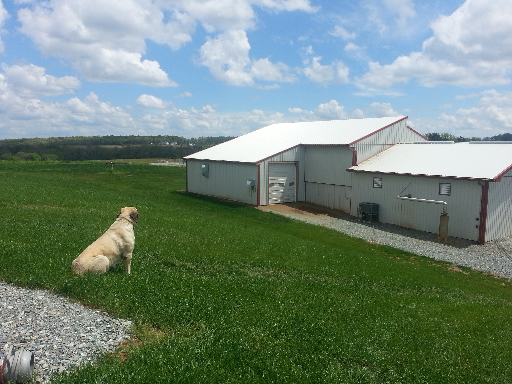

agricultural

I did a degree in Agricultural Engineering, now called Biological Systems Engineering, at UC Davis from 2007-2011, mostly because I was interested in working with Dr. Ruihong Zhang, and her experience and research interests in anaerobic digestion of industrial and agricultural waste. We worked on a project in turkey waste digestion, in partnership with Cargill International, one of the largest meat and agricultural processing companies globally, and the results of the study are here. In the end the project ended up giving Cargill the information to setup digesters at their processing facilities, potentially setting up a new diversion path for untold millions of gallons of waste.
I also had the opportunity to work RCM digesters from 2013-2014. RCM Digesters built manure digesters at Cow, Pig, and Chicken farms. I was able to apply a bit of my research and education here, as well as learn alot about Agriculture and Business in general. I worked on five projects, in Minnesota, Massachusetts, Upstate New York, and in North Eastern Australia. I worked on a very specific part of the anaerobic digestion process called hydrogen sulfide scrubbing, a process of removing a compound that is a trace part of the output of the digester, H2S, a chemical that can cause engine damage and is unsafe to inhale (but no where near the quantity that I experienced in Chemical Engineering).
Both of these experiences were particularly humorous to me as a vegetarian, but secretly I do appreciate the consumption of these goods providing me a job, even if I did find it pretty gnarly and unappetizing.
In this space, I wanted to mention that there are a bunch of really cool and strange hackathon opportunities. I follow the Aps for Ag hackathon and attended a recent event in Coalinga, and will attend the upcoming event in Davis. Come with me if you are interested! There are not a lot of developers in the agricultural space and it's an area ripe for simple software solutions.